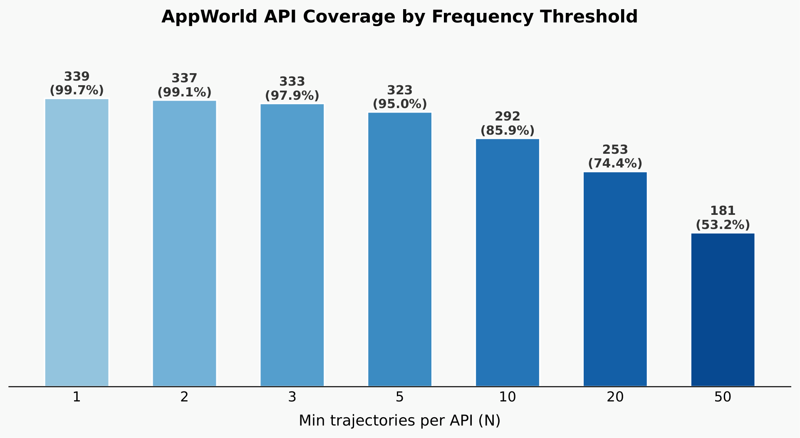
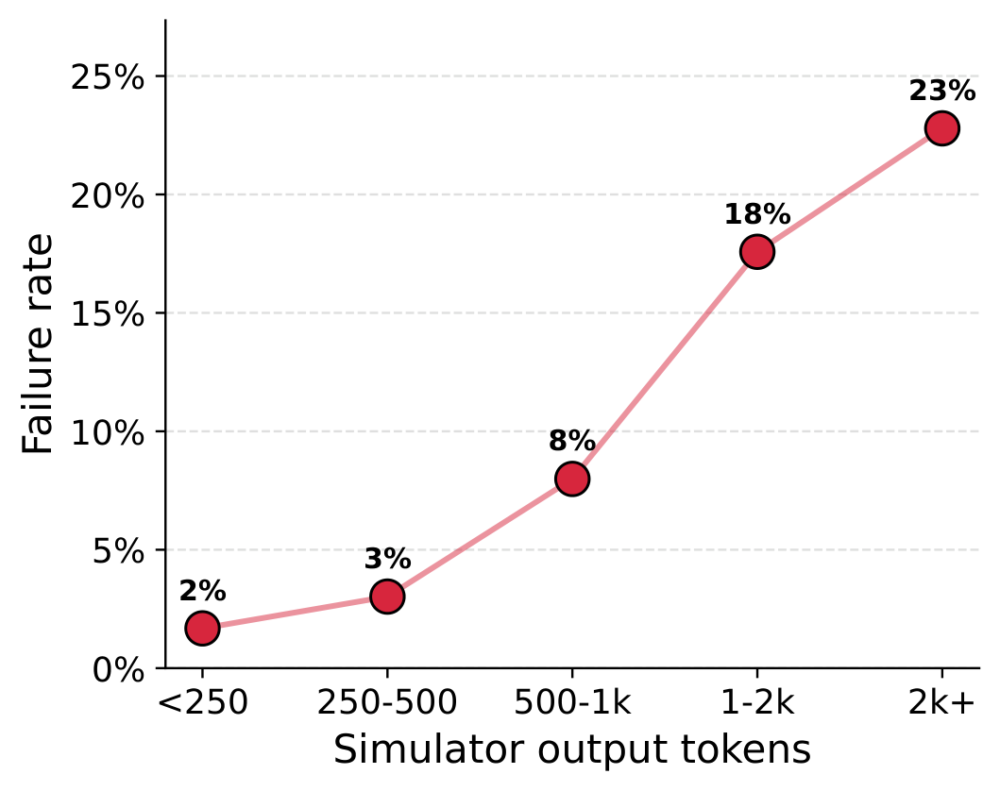

训练API调用型LLM智能体需要海量高质量轨迹数据。大规模收集此类数据通常需要具备可执行API的完整环境，造成严重可扩展性瓶颈。
ESAT（Environment-Free Synthetic Agentic Trajectory）流水线通过将LLM作为数字世界模型来模拟真实环境，无需构建任何物理运行环境即可直接合成高质量的API调用智能体训练数据。

ESAT流水线包含三个阶段：任务合成、轨迹合成和轨迹过滤。每个阶段都充分利用了现代LLM的推理能力。
该流水线的核心创新在于将智能体训练数据生成从需要完整基础设施的复杂工程问题简化成只需要API规范文档的轻量级数据生成任务，大幅降低了智能体训练生产门槛。
在任务合成阶段，ESAT采用分桶生成策略来实现全面的场景覆盖。系统将任务空间划分为由多个维度定义的配置桶，包括难度等级、操作类型、任务重心、所需应用数量等。
为了解决生成数据的不均衡问题，ESAT引入了基于逆频率的采样策略，优先从使用次数较少的API中生成任务，保证训练数据覆盖所有可用API能力。
轨迹合成是ESAT的核心环节。教师智能体与基于LLM的API模拟器进行交互：教师发出API调用请求，模拟器根据请求参数和历史交互记录生成合理的模拟响应。
这种交互过程完整模拟了真实API调用的状态演进，使得生成的轨迹不仅包含正确的操作序列，还包含了API调用的返回值变化、错误处理和状态更新等。
在轨迹过滤阶段，ESAT使用专门的LLM裁判对生成轨迹的质量进行评估。裁判会检查每一条轨迹的正确性、完整性和冗余度，丢弃明显不可行或质量较低的训练样本。
为了确保过滤结果的可靠性，每条轨迹都会经过多次独立评判，只有当多数评委认可时才将其纳入最终数据集。
ESAT在AppWorld和OfficeBench两个数据集上进行了系统评估。实验表明使用ESAT合成数据训练的模型在多种指标上均获得了显著提升。
在AppWorld数据集中模型在使用ESAT数据微调后任务完成率提升了高达50.5%，表现甚至超过使用真实环境数据训练的模型。
OfficeBench上最高提升达到60.5%。模型在知识蒸馏效果方面也表现出色，Qwen3.5-27B的性能与GLM-5.1-FP8教师模型相当，差异小于3%，证明复杂API调用能力可以通过纯合成无环境数据迁移到更小的模型。

ESAT提出了一种轻量化、可扩展的智能体训练数据合成方案。通过将复杂的API环境模拟简化为LLM的条件生成问题，大幅降低了智能体训练门槛。
未来工作方向包括：探索更先进的模拟器模型以提升长序列模拟的准确性，扩展对更多复杂API场景的支持，以及开发自动化覆盖度分析工具。
参考：https://arxiv.org/abs/2607.16900